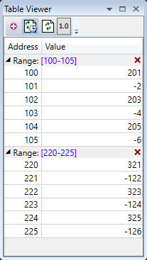
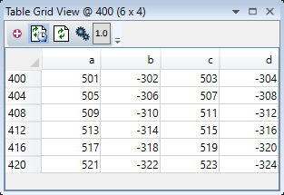
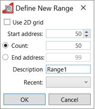
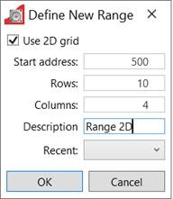

The Table Viewer tool allows the user to view and edit ranges of TABLE memory.

It is now possible to visualise the TABLE data in form of a grid for more natural representation of two dimentional array of values.

Names for the data columns can be assigned by clicking on the column header and typing the name.
To add a range of TABLE values to the
display click on the
 button in the toolbar. This will bring up
the "Define New Range" dialog to allow the user to specify the range
required.
button in the toolbar. This will bring up
the "Define New Range" dialog to allow the user to specify the range
required.

To add a new range as a grid view check ‘Use 2D grid’ check-box. When in grid mode the UI is changed to allow the user to select the number of rows and columns to be displayed.

After a range has been added to the viewer it can be edited by clicking on the corresponding range display in the tree (blue numbers), collapsed or expanded by clicking on the corresponding arrow in the tree, or deleted by clicking on the corresponding button in tree.
To edit the range settings in grid view press button on the toolbar.
The list of recent ranges can be used to simplify entering previous ranges.

A value can be overwritten by clicking on it and entering a new value. A value can be edited by double clicking on it. In both of these cases the value is written to the controller when the "Enter" key is pressed. Pressing the "Esc" key will abort the edit. Changes can be made whilst programs are running.
Multiple cells can be selected and it is possible to enter the same value for all of them at once.
The displayed valued can be updated
automatically using periodic polling of the controller or manually when the
user clicks on the refresh button
 . Automatic refresh is controlled by the
"Periodic update" button. Clicking on the periodic update button
changes its state from "Polling"
. Automatic refresh is controlled by the
"Periodic update" button. Clicking on the periodic update button
changes its state from "Polling"
 to "Not Polling"
to "Not Polling"
 .
The update rate can be changes on the "General" tab of the main
application options dialog.
.
The update rate can be changes on the "General" tab of the main
application options dialog.
The
 (decimal) or
(decimal) or
 (hexadecimal) button indicates the
current format used to display integer numbers. Clicking on the button brings
up a drop-down menu to allow the user to change the format.
(hexadecimal) button indicates the
current format used to display integer numbers. Clicking on the button brings
up a drop-down menu to allow the user to change the format.